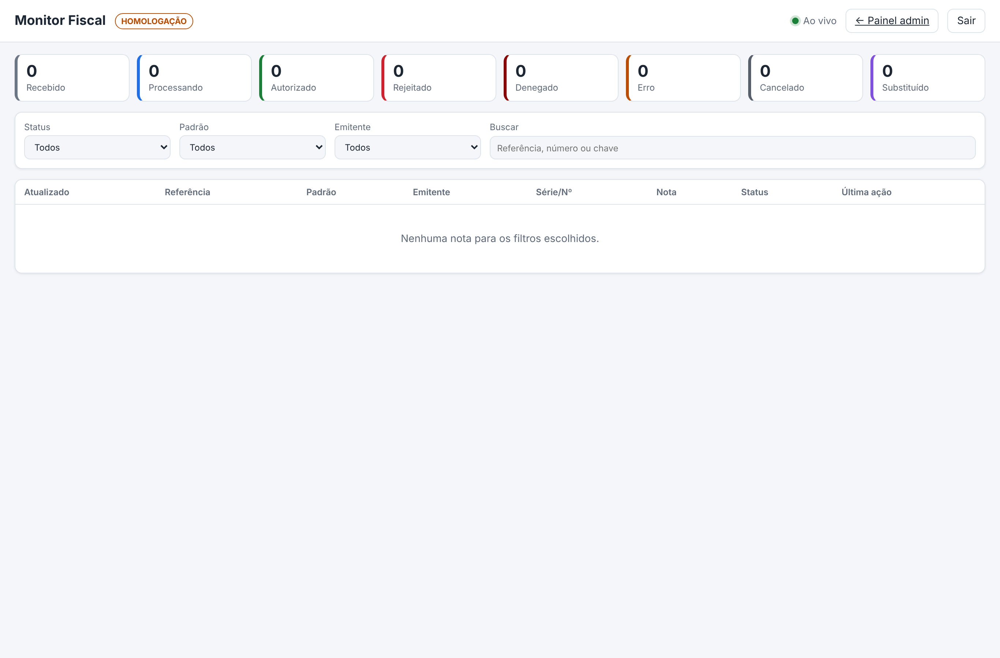
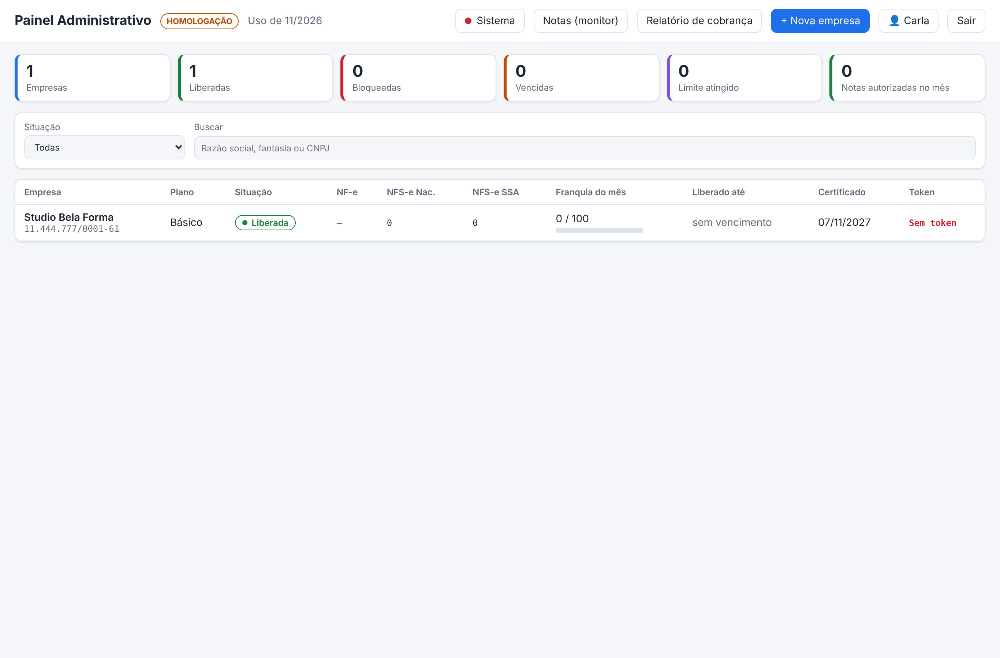
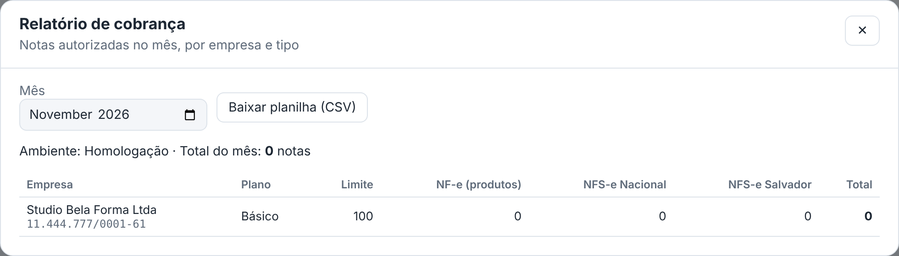

Monitor de notas e relatório de cobrança
Acompanhe as notas de todas as empresas em tempo real e veja quantas cada uma emitiu no mês.
-
Abra o monitor
No topo do painel, clique em Notas (monitor). Para ver só uma empresa, abra a ficha dela e clique em Ver notas desta empresa.
Os quadros do topo contam as notas por situação. A bolinha Ao vivo mostra que a lista se atualiza sozinha.

-
Filtre e abra uma nota
Use os filtros Status, Padrão, Emitente e a busca (referência, número ou chave). Clique numa nota para ver o histórico, a mensagem da prefeitura e baixar XML e PDF.
-
Veja a lista de empresas
A tela inicial do painel mostra cada empresa com plano, situação, notas do mês por tipo, franquia do mês (usadas / limite), vencimento do contrato, certificado e token. Use o filtro Situação para achar quem está bloqueada, vencida ou no limite.

-
Tire o relatório de cobrança
Clique em Relatório de cobrança, escolha o mês e veja as notas autorizadas por empresa e por tipo. Clique em Baixar planilha (CSV) para abrir no Excel.

O que cada situação da empresa quer dizer
| Situação | O que significa |
|---|---|
| Liberada | Pode emitir. |
| Bloqueada | Você desmarcou "Emissão liberada". O cliente vê o motivo. |
| Vencida | Passou da data "Liberado até". |
| Limite atingido | Chegou ao limite de notas do mês. |
Se der errado
| O que aconteceu | O que fazer |
|---|---|
| A bolinha "Ao vivo" não fica verde. | Atualize a página. Se continuar, rode o diagnóstico em Sistema. |
| Quais notas o relatório conta? | Só as autorizadas no mês, no ambiente atual. Rejeitadas e com erro não entram. Uma nota autorizada e depois cancelada continua contando, porque foi autorizada. |